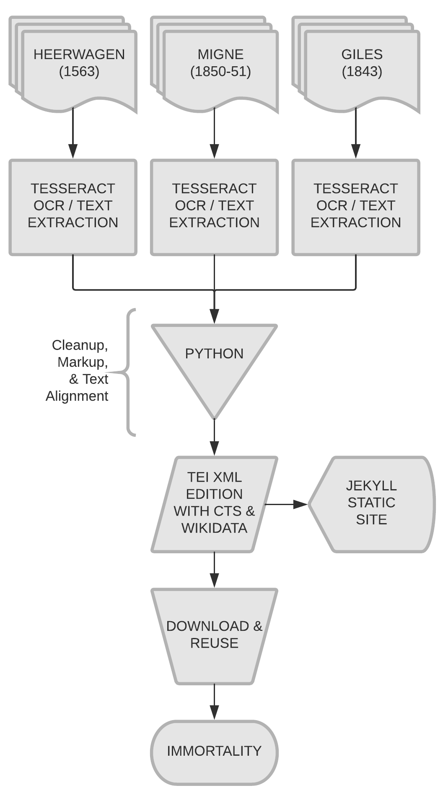

Bede disseminated his own works during his lifetime, and as was common practice at the time, he encouraged those to whom he sent copies of his works to copy and disseminate them more widely. In the letter to Albinus which accompanied two of his works, all he asks in return were remembrances and prayers: "I humbly beg that you ... will remind those to whom you send these little works of ours to [pray for me]." In short, Bede wanted his works to be in the public domain, as long as his authorship was remembered.
/